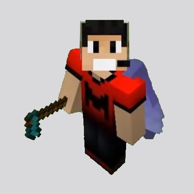
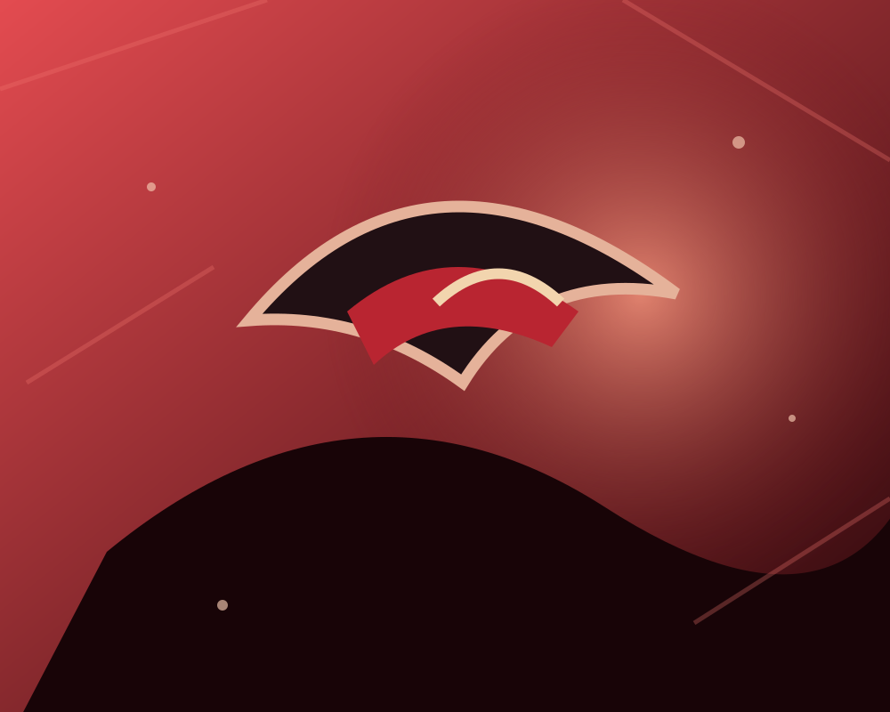
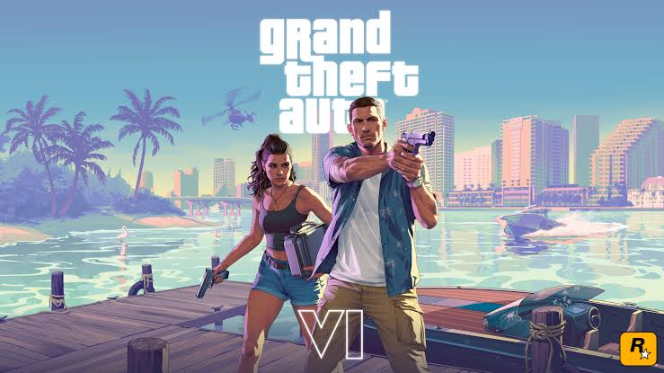
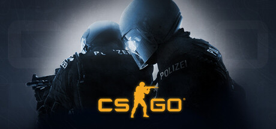
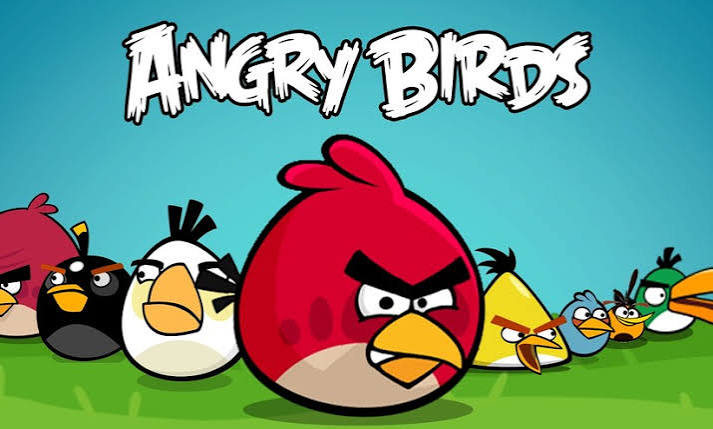

GAME 01
MINECRAFT
Construir, explorar e sobreviver. O limite é a criatividade.
SANDBOX · AVENTURA
Thiago de Sá Nóbrega
Entre códigos, partidas e aventuras,
sempre existe uma próxima fase.
01 / PLAYER SELECT

Construir, explorar e sobreviver. O limite é a criatividade.
SANDBOX · AVENTURA
Liberdade de exploração, história envolvente e mundo aberto cheio de possibilidades.
MOBA · COMPETITIVO
Precisão, raciocínio rápido e decisões em cada round.
FPS · TÁTICO
Às vezes, tudo que você precisa é mirar e se divertir.
PUZZLE · CASUAL02/ PLAYER SELECT
Faz parte da minha rotina, pois gosto de cuidar da saúde, desenvolver minha força e buscar constantemente minha evolução física.
· SAUDE ·esporte que proporciona diversão, trabalho em equipe e competitividade, além de ser uma ótima forma de praticar atividades físicas.
· ESPORTE ·Preidioma essencial para ampliar meus conhecimentos, conhecer novas culturas e conquistar oportunidades profissionais.
· APRENDIZAGEM ·Tenho interesse em programação e tecnologia, pois gosto de aprender coisas novas, desenvolver projetos e criar soluções utilizando códigos.
· TECNOLOGIA ·03 / PLAYER PROFILE
ESTUDANTE · TRABALHADOR · GAMER
LOADING PERSONALITY...
Tenho 21 anos, moro no Distrito Federal, trabalho e curso Análise e Desenvolvimento de Sistemas. Divido meu tempo entre responsabilidades, tecnologia, jogos e histórias que me fazem viajar para outros mundos.
Gosto de aprender coisas novas, evoluir no que faço e aproveitar cada momento — seja resolvendo um problema no código ou explorando mais uma aventura.